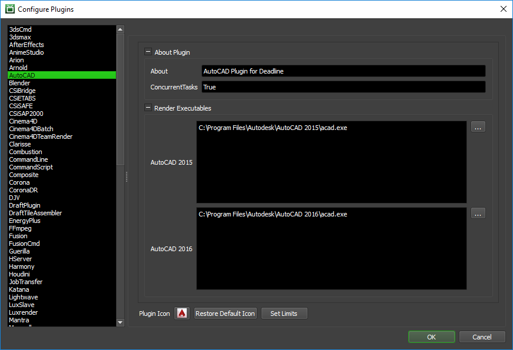

AutoCAD¶
Job Submission¶
You can submit jobs from within AutoCAD by installing the integrated submission script, or you can submit them from the Monitor. The instructions for installing the integrated submission script can be found further down this page.
To submit from within AutoCAD, press the Submit To Deadline button on the Deadline tab or run the command SubmitToDeadline
Submission Options¶
The general Deadline options are explained in the Job Submission documentation, and the Draft/Integration options are explained in the Draft and Integration documentation.
AutoCAD has 3 types of submission jobs each of which have their own specific options.
The render job options are:
Render Views: Which views to render, each one will be a separate frame in a single job.
Render Procedure: View or Selected - whether or not to render everything in the view or only the selected objects.
The plotter job options are:
Plotter to use: Which plotter should be used.
Plot Area: Extents or Display - what area should be plotted, everything in the scene or what is currently displayed.
Paper Size: The size of paper to plot to.
Paper Units: Which units to use for the paper.
Fit Plot Scale: Whether or not the plot should be scaled as much as possible to fit on the paper.
Plot Scale: The scale to use if not fitting
Plot Style Table: Which plot style table should be used.
Use Line Weight: Whether or not the lines should have extra weight on them.
Scale Line Weights: Whether or not the lines should be scaled.
The export job options are:
Selection: Which objects should be exported. Only available in the integrated submitter.
Types to Export: Which types of objects should be exported.
Textures: How textures should be handled.
DGN Settings: DGN specific settings such as version and seed file.
Pipeline Tools¶
When using the integrated submitter to submit through AutoCAD you have the ability to use any of the event plugins that you have enabled through the Deadline Monitor. This is done by opening the Pipeline Tools window via the Pipeline Tools button. This window is explained further in the Pipeline Tools documentation.
Plugin Configuration¶
You can configure the AutoCAD plugin settings from the Monitor. While in power user mode, select Tools -> Configure Plugins and select the AutoCAD plugin from the list on the left.
Render Executables
AutoCAD 2015 Executable: The path to the AutoCAD 2015 executable file used for rendering. Enter alternative paths on separate lines. Different executable paths can be configured for each version installed on your render nodes.
AutoCAD 2016 Executable: The path to the AutoCAD 2016 executable file used for rendering. Enter alternative paths on separate lines. Different executable paths can be configured for each version installed on your render nodes.
Integrated Submission Script Setup¶
The following procedures describe how to install the integrated AutoCAD submission script. This script allows for submitting AutoCAD render jobs to Deadline directly from within the AutoCAD editing GUI.
You can either run the Submitter installer or manually install the submission script.
Submitter Installer¶
Run the Submitter Installer located at
<Repository>/submission/AutoCAD/Installers.
Manual Installation¶
Copy the file:
[Repository]\AutoCAD\Client\AutoCADSubmitter.bundle to %APPDATA%\Autodesk\ApplicationPlugins
Verify Installation¶
Restart AutoCAD and the Deadline toolbar should be available.
FAQ¶
AutoCAD 2016 requires signed dlls. Are Deadline’s plugins signed?
Yes, all of Deadline’s plugins are signed, due to the new system though you will have to add Thinkbox as a trusted company to each of your machines. This can be done by opening AutoCAD 2016 on the machines that have the plugins (including the render plugin) and then allow the plugins to always load.
Error Messages and Meanings¶
This is a collection of known AutoCAD error messages and their meanings, as well as possible solutions. We want to keep this list as up to date as possible, so if you run into an error message that isn’t listed here, please visit the Thinkbox Help Centre and let us know.
Currently, no error messages have been reported for this plugin.

{kind=link}
{kind=link}
{kind=link}